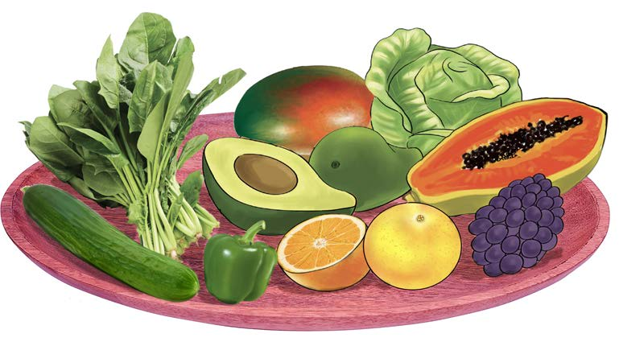

and carrot. They are also found in fruits like papaya, orange, avocado, grape and mango. Figure 5 shows examples of foods rich in vitamins and minerals.
Figure 5: Foods rich in vitamins and minerals

Water
The body needs enough water to work properly. But, water is not a main food group in a balanced diet. Water has minerals that help the body systems work properly. It helps in the process of breaking down food in the digestive system. Also, water regulates body temperature and helps in nutrient absorption. It also helps remove waste and harmful substances from the body.
Activity 3
1. Plan a balanced lunch using different types of food available in your environment.
2. Why did you choose each food in the meal?